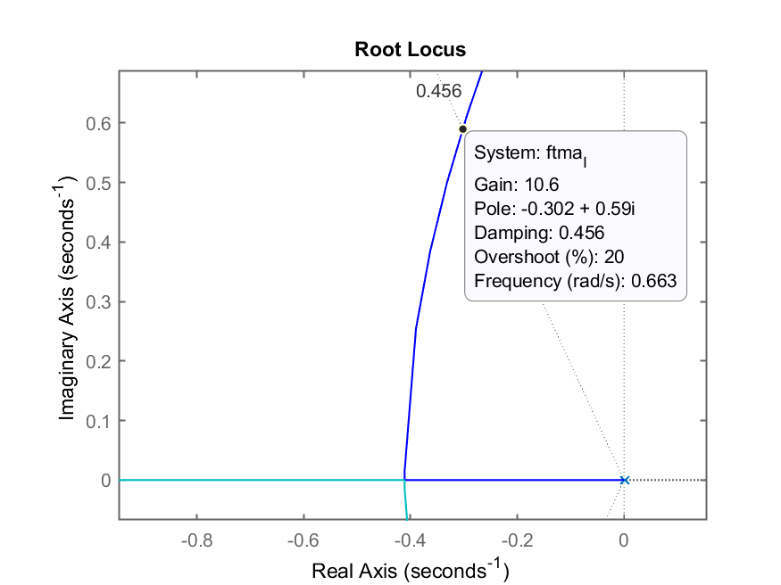
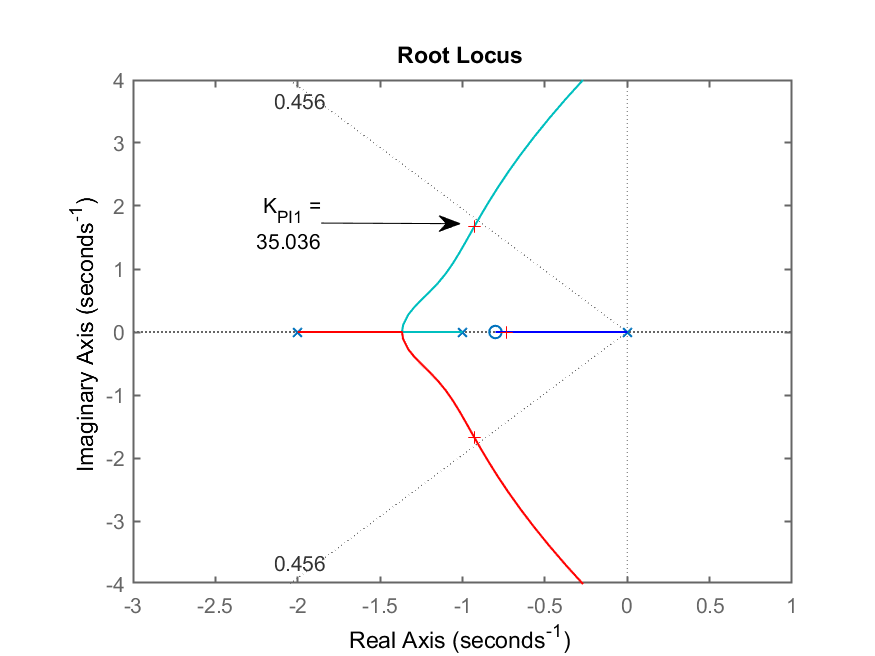
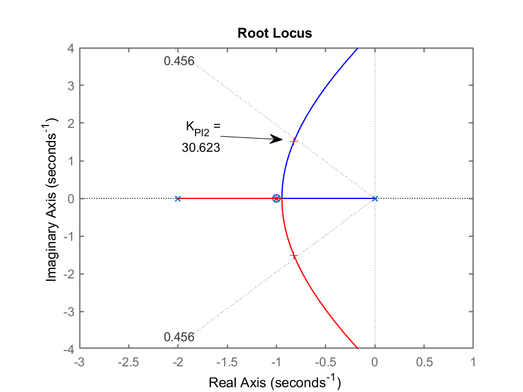
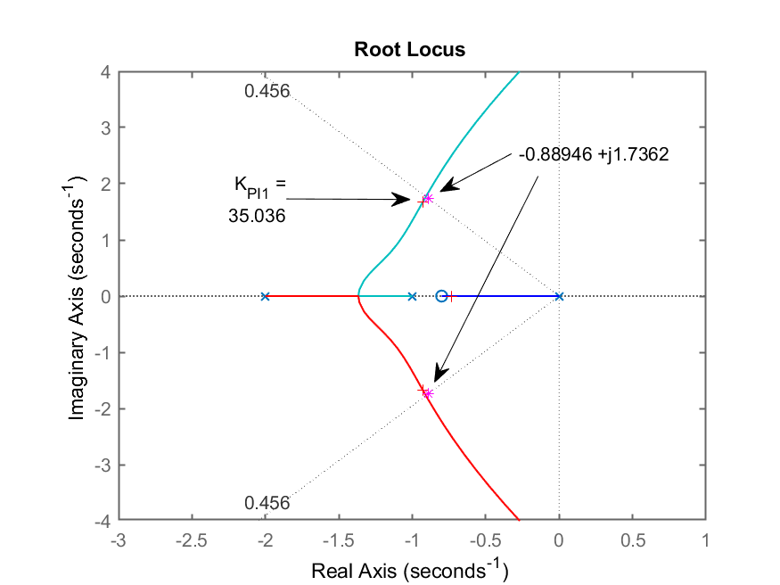

Aula de 17/10/2022.
Obs.: Para continuar os trabalhos à partir da aula passada fazer:
>> diary 17102022.md % criar arquivo de "log" com comandos da aula
>> load dados % carregando dados da aula passada
>> who % para verificar os dados
Your variables are:
G Kp erro zeta
K OS ftmf
K1 ans ftmf_K1
>> K1
K1 =
180
onde: K1=ganho adotado no último projeto de controlador realizado. Este era o valor necessário para fazer
Obs.: uma cópia de [dados.mat] pode ser obtida [aqui].
Continuando os projetos de controladores…
Equação deste controlador
Novo requisito de controle:
Lembrando do
>> stepinfo(ftmf)
RiseTime: 0.50254
SettlingTime: 3.7476
SettlingMin: 0.72345
SettlingMax: 1.0132
Overshoot: 28.332
Undershoot: 0
Peak: 1.0132
PeakTime: 1.2474
>> % Calculando o novo ts
>> new_ts=3.7476*1.2
new_ts =
4.4971
Iniciando projeto, incluindo o controlador…
>> C_I=tf(1,[1 0])
C_I =
1
-
s
Continuous-time transfer function.
>> ftma_I=C_I*G;
>> zpk(ftma_I) % verificando acréscimo do Integrador
1
--------------------
s (s+10) (s+2) (s+1)
Continuous-time zero/pole/gain model.
>> rlocus(ftma_I)
>> hold on
>> sgrid(zeta,0)
% `
RL resultante deste controlador:
Figura mostra valor aproximado de
RL com zoom mostrando o ganho

Adotando
>> K_i=10.5;
>> % fechando a malha
>> ftmf_I=feedback(K_i*ftma_I,1);
>> figure; step(ftmf_I)
>> stepinfo(ftmf_I)
RiseTime: 2.4988
SettlingTime: 13.088
SettlingMin: 0.93875
SettlingMax: 1.1884
Overshoot: 18.844
Undershoot: 0
Peak: 1.1884
PeakTime: 5.9205
Resposta ao degrau:

Comentários: Nota-se que o
Solução?
Resp.: outro controlador: “juntar” à ação Integral, a ação Proporcional.
Equação deste controlador:
Temos um probleminha “extra” agora:
— Onde alocar o zero do PI?
Podemos continuar resolvendo este problema de algumas formas diferentes. A mais “fácil” é raciocinar sobre RL´s supondo diferentes posições para o zero do PI. Outra solução mais determinística é usar o método da Contribuição Angular.
Neste caso, primeiro vamos raciocinar sobre o impacto causado no RL da
Aqui neste documento serão retratados 2 situações (casos) considerados os mais interessantes:
Ingressando os controladores:
>> C_PI1=tf(poly(-0.8),poly(0))
C_PI1 =
s + 0.8
-------
s
Continuous-time transfer function.
>> C_PI2=tf(poly(-1),poly(0))
C_PI2 =
s + 1
-----
s
Continuous-time transfer function.
>> ftma_PI1=C_PI1*G;
>> ftma_PI2=C_PI2*G;
>> % traçando os RLs
>> figure; rlocus(ftma_PI1);
>> axis([-12 5 -15 15]) % realizando um "zoom" sobre região de interesse
>> hold on
>> sgrid(zeta,0)
>> axis([-12 5 -10 10]) % melhorando o "zoom" anterior
>> % gerada figura RL_PI1.png
>> % Segue RL do outro controlador
>> figure; rlocus(ftma_PI2);
>> axis([-12 5 -10 10])
>> hold on;
>> sgrid(zeta,0)
>> % gerada figura RL_PI2.png
Comparando os 2 RLs:
| RL do PI1 | RL do PI2 |
|---|---|
 |
|
Percebe-se que os 2 RLs são bastante semelhantes com excessão de um detalhe. a
Finalizando os projetos dos 2 controladores
>> figure(3) % voltando o foco para o RL com PI1
>> axis([-3 1 -4 4]) % "zoom" na área de interesse
>> [K_PI1,polos_MF_PI1]=rlocfind(ftma_PI1)
Select a point in the graphics window
selected_point =
-0.89773 + 1.6675i
K_PI1 =
35.036
polos_MF_PI1 =
-10.409 + 0i
-0.9282 + 1.6742i
-0.9282 - 1.6742i
-0.7348 + 0i
RL do PI1 ressaltando ganho adotado e polos dominantes de MF (notar pontos com marcadores ‘+’ na figura)

Finalizando projeto do PI2:
>> figure(4) % forçando foco no RL do PI2
>> axis([-3 1 -4 4]) % "zoom" na área de interesse
>> [K_PI2,polos_MF_PI2]=rlocfind(ftma_PI2)
Select a point in the graphics window
selected_point =
-0.81439 + 1.5087i
K_PI2 =
30.623
polos_MF_PI2 =
-10.354 + 0i
-0.82299 + 1.5101i
-0.82299 - 1.5101i
-1 + 0i
RL do PI2 ressaltando ganho adotado e os polos dominantes de MF:

Verificando resultados obtidos com os 2 controladores:
>> ftmf_PI1=feedback(K_PI1*ftma_PI1, 1);
>> ftmf_PI2=feedback(K_PI2*ftma_PI2, 1);
>> figure; step(ftmf_PI1, ftmf_PI2)
>> legend('PI1', 'PI2')
Resposta ao degrau para PI1 e PI2:

Conclusão:
O PI1 é o que me permitiu atender o
Equação final do PI1:
Questões:
— Existe outra forma de determinar
Resp.: usando-se contribuição angular.
Neste caso, necessitamos saber onde queremos que fiquem localizados os polos de MF uma vez fechada a malha para o sistema e usamos a regra do Root Locus para determinar a variável que está faltando, no caso, o valor exato do zero do controlador.
Segue regra que confirma que determinado ponto faz parte do traçado do RL:
Vamos usar esta regra para descobrir o
Precisamos lembrar como calcular a posição desejada para os polos de MF aproximando a resposta do sistema para um de 2a-ordem subamortecido.
Lembrando da resposta típica de um sistema de 2a-ordem sub-amortecido, sua relação com
Então:
Usando Matlab:
>> new_ts
new_ts =
4.4971
>> wn=4/(zeta*new_ts)
wn =
1.9508
>> % Calculando os polos desejados de MF
>> sigma=-zeta*wn; % parte real dos polos
>> wd=wn*sqrt(1-zeta^2); % parte imaginária dos polos
>> polos_MF=[sigma-i*wd sigma+i*wd]
polos_MF =
Column 1
-0.88946 - 1.7362i
Column 2
-0.88946 + 1.7362i
>> figure(3) % voltando o foco para o RL do PI1
>> hold on
>> plot(polos_MF,'*m') % sobrepondo os polos de MF desejados
%
Podemos a título de curiosidade sobrepor no plano-s, estes polos de MF desejados sobre os RLs já criados para entender melhor o problema e porque o controlador PI1 se “saiu melhor”.
Resultado gráfico do RL para o PI1, ressaltando ganho adotado, polos de MF encontrados e pólos desejados de MF (marcadores = ‘*’). Percebe-se que, “por acaso”, que o zero de PI1 arbitrado em

O projeto usando contribuição angular continua na próxima aula…
Para tanto:
>> save dados.mat
>> diary off
>> quit